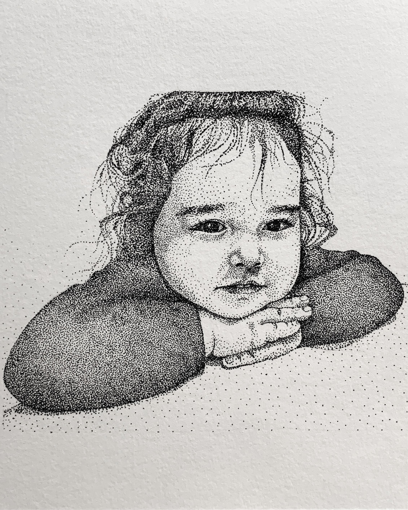
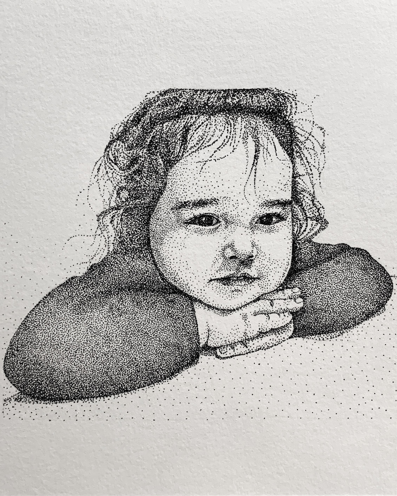

In the "Zodiac Sign" series, I crafted five enchanting illustrations, each portraying a cute fairy to represent a different zodiac sign. These whimsical artworks infuse astrological symbols with creative flair, offering a charming and distinctive perspective on the traditional zodiac.

 

In my Stippling portraits, I delved into the meticulous technique of dotwork, using a myriad of tiny dots to craft detailed and nuanced depictions. This method allowed me to play with texture, shading, and intricate details, resulting in unique and captivating artworks.